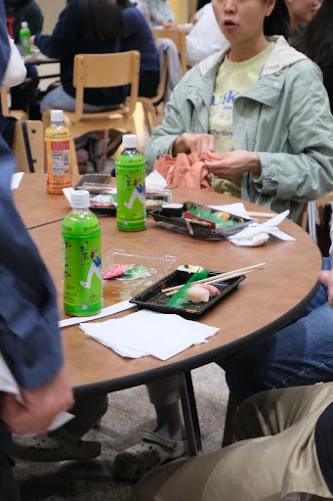

Recent
Hanami
Hanami Festival 2026
JAM's spring gathering at Walker Memorial, with free sushi, matcha, shogi, origami, calligraphy, and cultural booths for the MIT community.


Japanese Association of MIT
A student-run home for Japanese culture, food, language, sports, research, and everyday community across the Institute.
Culture
Community
Sports
Science
Student support
JAM's spring gathering at Walker Memorial, with free sushi, matcha, shogi, origami, calligraphy, and cultural booths for the MIT community.
Expert talks and a panel on tsunami science, disaster response, infrastructure, preparedness, and Japan's relationship with natural risk.
MIT Stata Center 32-155. Free admission. Confirmed speaker lineup.

A welcome event for incoming students at the start of the academic year. Details are still being shaped, with space for food, friends, and practical advice.

About
JAM's constitution defines three purposes: introduce and promote Japanese culture to MIT, foster social connections and cultural exchange, and facilitate academic outreach rooted in Japanese perspectives.
Membership is open to MIT students. Our wider community also brings together graduate students, postdocs, faculty, visiting researchers, families, alumni, and friends around events, sports, and student support.


Activities
Culture is not only a festival. It is weekend basketball, quick introductions, campus tours, and the small bits of help that make MIT easier to inhabit.
About 30 members play street basketball most weekends at a local park, join MIT intramural play, and face Boston Japan Basketball Club several times a year.
JAM helps support campus visits for Japanese high school students and other groups interested in seeing MIT from the inside.
JAM builds recurring programs that can grow year by year, from Hanami to lecture-style events such as Beneath the Great Wave.
At the beginning of the academic year, JAM helps incoming students meet peers, ask practical questions, and find a community early.
Members
Constitution
Japanese culture, cultural exchange, and academic outreach rooted in Japanese perspectives.
All MIT students are eligible for membership. JAM maintains an MIT-student majority as a student organization.
Officers are elected annually in spring, with president and treasurer roles held by distinct MIT students.
Join / volunteer / collaborate
Write to JAM if you want to join the community, volunteer at an event, play basketball, coordinate a campus visit, or propose a cultural program.
jam-hq@mit.edu Join jam-all